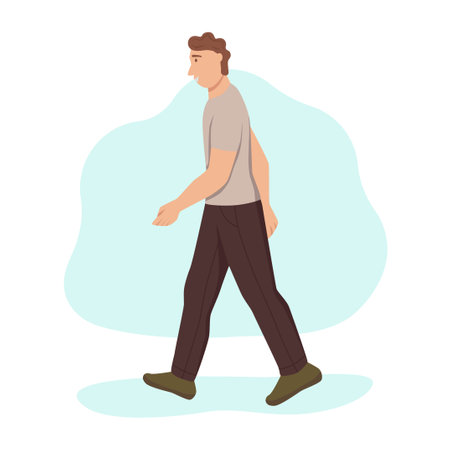

Sugestões de Atividades Físicas
Dicas de exercícios para iniciantes, intermediários e avançados.
Iniciantes
Caminhada: Comece com caminhadas de 20 a 30 minutos, 3 a 5 vezes por semana. É uma ótima maneira de aumentar a resistência.
Intermediários

Treinamento de Força: Utilize pesos livres ou máquinas, fazendo 3-4 séries de 10-12 repetições em exercícios como supino ou agachamento.
Avançados

HIIT (Treinamento Intervalado de Alta Intensidade): Realize sprints de 30 segundos seguidos de 1-2 minutos de descanso, 3-4 vezes por semana, para maximizar a queima de gordura e resistência.